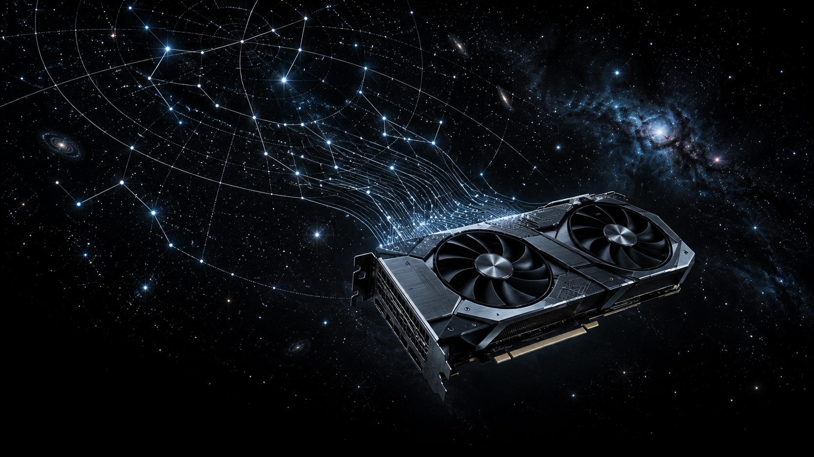

PixInsight workflows for astrophotography
From integrated master
to finished image.
Loom brings the finishing steps of astrophotography into a deliberate workflow. Calibrate, align, combine and shape your broadband or narrowband masters, with each decision close to the image it affects.
PixInsight scripts available · Siril port experimental · native modules in development

PixInsight
Loom
A considered path from master frames to finished plates.
Start with your integrated masters. Loom solves and calibrates each channel, removes gradients, corrects aberration, registers and crops the set, then combines and colour-calibrates the result. Continue with optional sharpening, star extraction, stretch, denoising and export.
The PixInsight script is available now. A native Preprocess process is not yet available.
See the PixInsight workflow
PixInsight
Frame Selector
Choose the subframes that move your integration forward.
Measure a folder of subframes, compare quality by filter, then review the suggested cut before deleting the weaker frames or copying the selected set elsewhere. Bring in a night directly from an ASIAIR card when you are ready to sort.
Explore Frame Selector
PixInsight
Fly-Through
Take the stars out of the flat plane.
Turn a finished image into a push-in video. Fly-Through places stars at their Gaia distances, so nearby stars pass the camera faster while distant stars stay close to the backdrop. Render frames for your chosen format, with video encoding when ffmpeg is available.
Explore Fly-Through
PlateSolve concept artwork
In development / PixInsight module
PlateSolve
A native plate solver for PixInsight is in development.
PlateSolve is being built to find a sky solution from an image and catalogue data, verify the result, and write its WCS. It is not available to download yet.
In developmentExperimental / Siril 1.4
Loom for Siril
The Loom workflow and Fly-Through, ported to Python.
The experimental Siril port brings Loom's processing workflow and Fly-Through to Siril 1.4. It has been tested in Siril 1.4, but remains an early port. Install from the project checkout and review the documented differences before using it on important work.
Read the Siril install notesGet started
Install Loom
in PixInsight.
PixInsight scripts
Add the signed Loom script update repository in PixInsight under Resources → Updates → Manage Repositories:
Then choose Resources → Updates → Check for Updates, apply the Loom update and restart PixInsight. The scripts appear under Script → Loom. Install from the update repository or from a Git checkout, not both.
Open the PixInsight update repository{{PACKAGE_TITLE}}
The current PixInsight script package, from the signed update repository.
Download the current script packageThe native PlateSolve module has no public download yet.
Using Siril?
Install the experimental scripts from the project checkout. On first run, the scripts install their Python requirements into Siril's Python environment.
Read Siril install notesNative Loom modules
All native Loom modules will use one shared update repository. The feed is planned and is not available yet. Wait for availability to be announced before adding it.
Once the feed is available, install native modules with these steps:
- Open Resources → Updates → Manage Repositories.
- Choose Add and enter the native module repository URL above.
- Choose Resources → Updates → Check for Updates.
- Apply the available Loom module updates, then restart PixInsight.
Native module availability
Public native packages are being prepared. macOS and Windows availability will be listed here after their packages have been verified. Windows packages are not publicly available yet.
PixInsight offers packages that match your operating system, processor architecture and supported PixInsight version. A native module is available for your system only when a compatible package is offered by the repository.
This native module feed is separate from the existing script repository above. The script update address remains https://fcarucci.github.io/Loom/updates.xri.